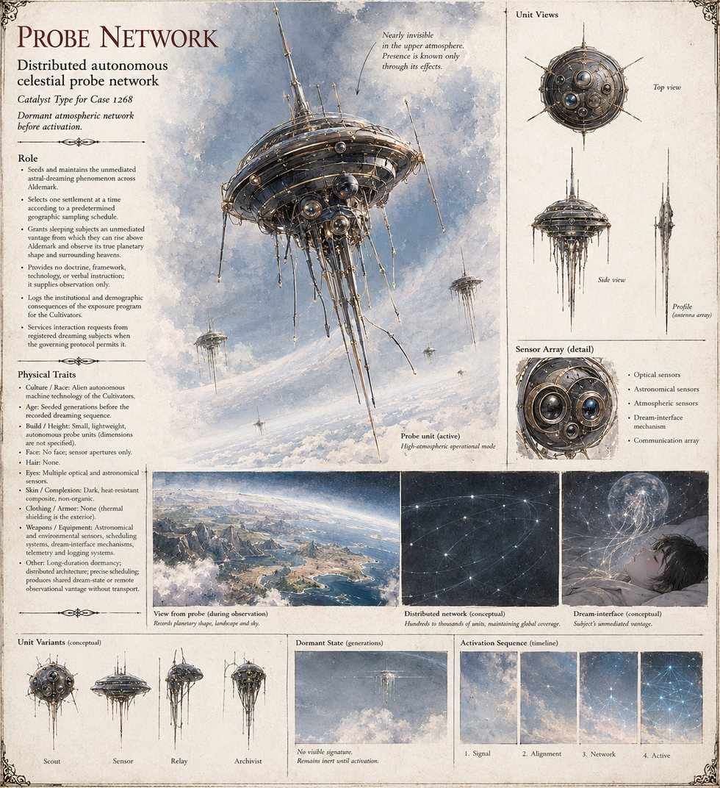

The Probe Network
Catalyst, Case 1,268 · distributed autonomous celestial probe network · seeded generations before the first dream · no face
A network of autonomous probes seeded silently into Aldemark's high atmosphere generations before any living Warden's grandfather was born, so completely dormant that no chronicle recorded a light in the wrong part of the sky until a schedule fixed before the seeding itself began to turn. It grants the sleeping minds of one village at a time an unmediated seat above their own world, with no voice, no vision of a god and no instruction: only altitude, and as much more of it as a dreamer has the nerve to keep asking for. It picks settlements by geographically stratified sampling of the whole inhabited landmass, with no weight for politics, religion or importance; eleven days of visitation, eleven months of silence, one settlement at a time. Eleven, the Custodian log explains, was never a sacred number, only the smallest count of independent exposure samples its statisticians judged enough to tell a pattern from ten coincidences. The Crown's temples build a numerology on it anyway.
Ten selections are villages: Halstead, Ansdorf, Grenmoor, Wulfsholt, Faldrun, Brandwick, Harkendale, Stonewick, Aschendale and Reinfeld. The eleventh, fixed before the first probe reached Halstead and unmoved by anything the Crown did in between, falls on the whole capital, wall to wall, and on every Warden, priest and Triarch asleep inside it; the guard Dornhal rotates to keep itself awake holds for six days, and on the seventh a sentry dreams the whole of it in a single breath. The log counts one thousand one hundred and four dead across ten selections and one thousand two hundred and eleven in all, once the eleventh's riots, reprisals and private reckonings are added. It records the burning of Halstead in the flat notation it uses for weather. It also does one thing no one intended: an unrevised protocol answers an anchorite's sustained, specific request with more range than any subject in this or any earlier selection has been given, and the log files no correction, since correcting it would take an intervention more conspicuous than the deviation. Her second request, made during the eleventh selection and addressed to the dormant unit, is not serviced; the log cannot say whether the shared channel could not isolate it or the unit declined.
The sheet draws a nearly invisible, faceless unit in dark, heat-resistant composite, with a saucer-shaped body, a tall antenna spire and trailing sensor tendrils, carrying optical, astronomical, atmospheric, dream-interface and communication arrays; its variants are labelled Scout, Sensor, Relay and Archivist. It pictures the network as hundreds to thousands of units and marks that as conceptual, a figure the manuscript does not give.